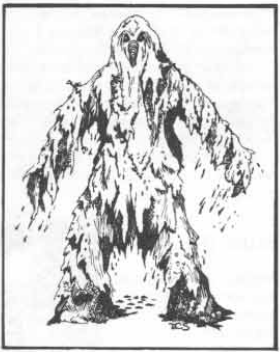
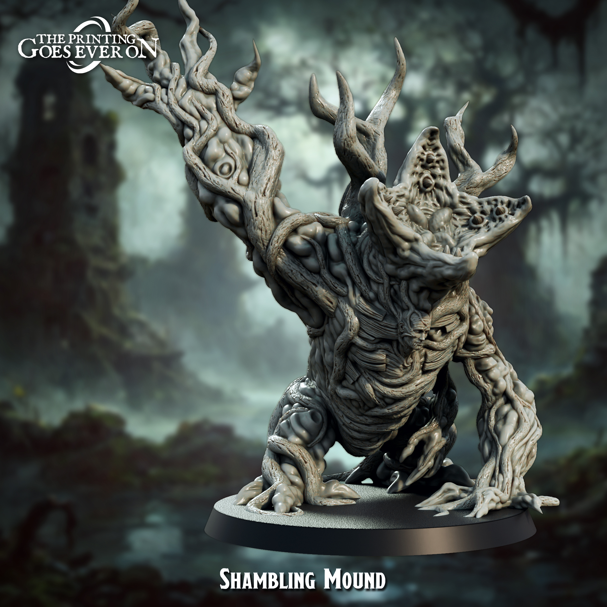
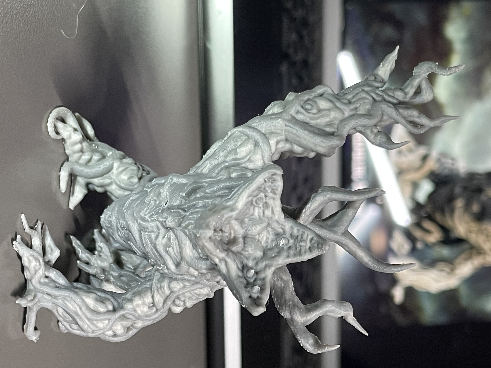
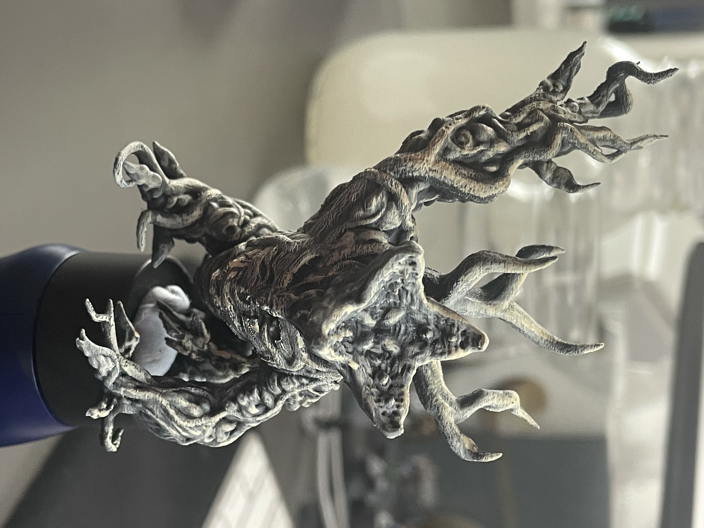
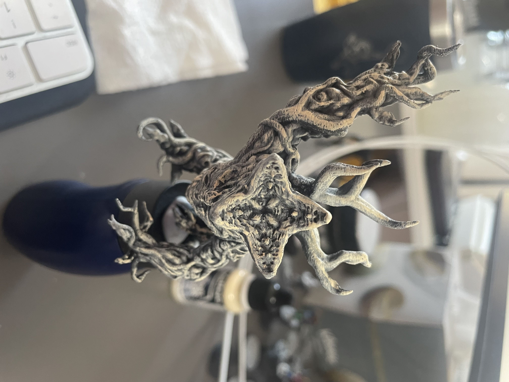
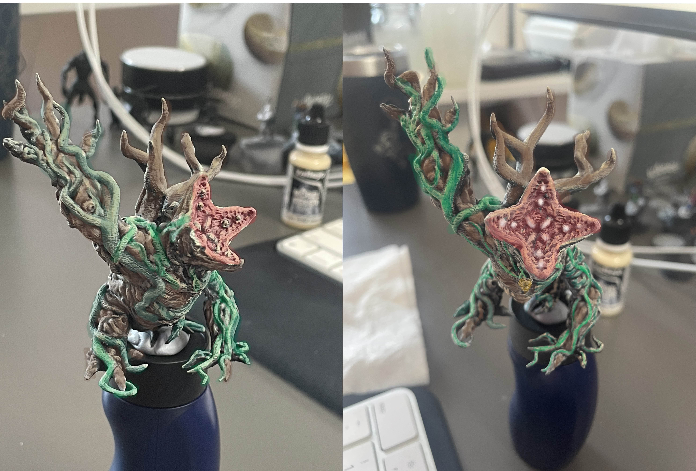

Shambling Mound

This is a short journal of my project to 3D print and paint a Shambling Mound mini.
If you’re not familiar a Shambling Mound is a D&D monster dating back to the original Monster Manual by Gary Gygax in 1977.
Shambling mounds, or “shamblen,” are found in dismal marshes or certain wet subterranean places. They are omnivorous, feeding upon any living material (via their weird roots and tendrils). They attack fearlessly, clubbing with their limbs twice per melee round. If both of a shambler’s clubbing attacks hit a single opponent, the victim is entangled and will be suffocated in the creature’s slime in 2-8 melee rounds unless the creature is killed.
The brain of the shambler is located in its mid-portion, and its thick fibrous layers make it difficult to penetrate to its only vital area. In fact, most hits upon it do but little damage. As it is wet and slimy, fire has no effect, lightning causes it to grow (add 1 hit die), and cold does either one-half or no damage due to its vegetable constitution. All weapons score only one-half damage. It can flatten itself, so that crushing has small effect. Spells which affect plants are effective against shambling mounds, plant control and charm plant being good examples.

I’m a patreon subscriber to The Printing Goes Ever On. They released a set of models called Beowulf’s Deceit that included a Shambling Mound. Pictured to the left is a rendering of the model (that’s not an actual print). You can barely see the face of an adventurer that’s been absorbed into the shambler. This model also looks to be inspired by Stranger Things. The head/mouth of the shambler has a very close resemblance to the head/mouth of the Demogorgon from season 1 (as pictured to the right). It’s also worth nothing that the Spider Monster of season 3 was a form of a flesh thrall that would absorb bodies to become a very gross amalgamation. While the shambling mound is entirely plant based (as opposed to flesh/bone based), it also can absorb creatures into it. To

I recently bought a Bambu Lab A1 mini 3D printer. I had resisted buying one for a long time. However, my daughter was saying she wanted to try 3D printing some of her art projects. Then I saw the Welcome Trove from TPGEO that was beautiful models of Tolkien’s Fellowship of The Ring. There was an end of year sale on the A1 mini, and here we are.
The A1 mini is a great little printer. There’s definitely some technical skill to get any printer to produce good prints. It’s been a learning journey for sure. My son was doubtful my printer could do this model justice, but I think it turned out great.


Because I’m just learning to paint, I’m still experimenting with various techniques. I bought Army Painter’s Speedpaint Starter Set to use a technique called Slapchop. The basic idea is to prime the mini in black, paint a grayscale undercode paying close attention to your light source and then paint with mostly translucent contrast paints. With the thinner paints, the under paint of highlights increases the value of the colors.
The left-most image is my first attempt. On a pure black prime, I used a dry brush to mostly cover it with gray. This left the darkest parts still black, but most of the model was dark gray. I then did another coat with a brighter gray. This left a nice gradient between the blacks and most of the model that was brighter. Then I went back with an almost white (Vallejo Model Pale Sand) and dry brushed just the highlights. After that, I used Citadel Nuln Oil shading wash to add back some of the details by filling in the dark edges.
After letting the wash fully dry, I did a little highlighting with a brush using straight Pale Sand. After showing some folks online, they suggested adding more highlights. So the next picture to the left is after I went back and touched up as many of the hightlights as I could without losing the contrast.

One of my favorite series of tutorial videos for this technique is from Dana Howl. She has a great video on How to Underpaint Minatures and How to Glaze Minatures. She also has another video on How to Plan Color Schemes using MS Paint. I’ve put a lot of effort into this shambling mound and I don’t want to screw it up. Frankly, I’m a little scared to put color on it.
So I decided to use Dana’s MS Paint technique, but using Procreate on my iPad. Dana also has a page up showing how all the colors look painted on actual minis. I went through that page and built up a color pallet. Using that I was able to paint a 50% transparent layer with various colors. My goal was to figure out what parts were brown/woody, what parts were green/planty.
The images to the right are not actually painted in real life. That is an export from Procreate. I thought this was really neat. I could definitely make a few more attempts. I really only used one brown, a red, and two or three greens. There’s probably an opportunity to use some yellows and oranges too. This kind of color pallet work is an area I need more practice.